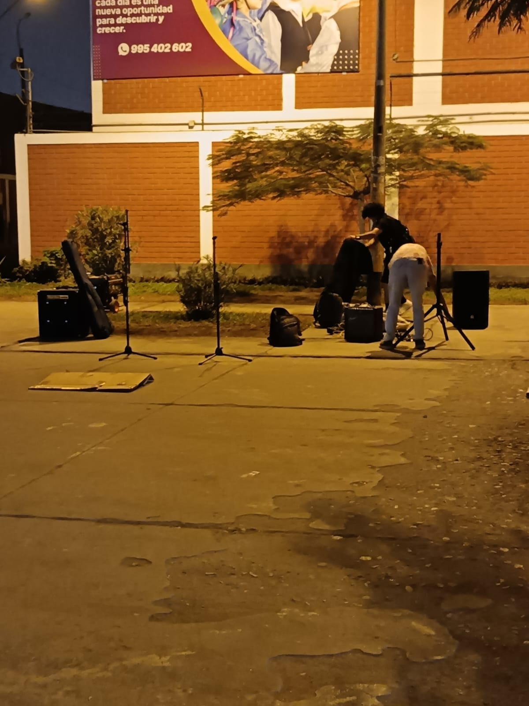
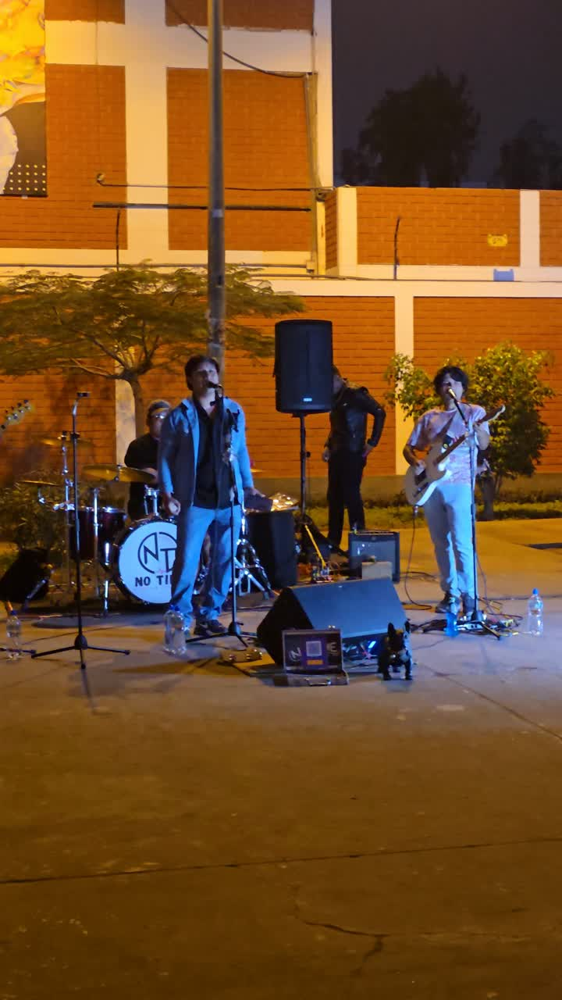

Garaje a cielo abierto: cuando el parque se convierte en escenario
Cada sábado, en la Av. Belaunde, en Comas, bandas de garaje toman el espacio público y transforman el parque en un escenario musical entre el arte y el ruido.

Por Jhonny León
Área de Géneros de la Realidad
Comas, Lima
Lectura: 4 min

Son las seis de la tarde de un sábado cualquiera. En el Parque Mariposa, ubicado en la Av. Belaunde, en Comas, un hombre de mediana edad camina apurado por la vereda, la mirada clavada en la pantalla de su celular. De pronto, un golpe de batería le atraviesa los oídos. Alza la vista. A pocos metros, sobre la explanada del parque, un grupo de jóvenes descarga guitarras, conecta amplificadores y ajusta micrófonos. El hombre reduce la velocidad de su andar. Ya no mira el teléfono. Se detiene unos minutos. Como él, otros transeúntes frenan, se asoman, se sientan en las bancas o simplemente se detienen a escuchar.
Así comienza, cada sábado, una escena que se repite en el Parque Mariposa de la Av. Belaunde, en Comas: bandas de garaje que salieron del encierro para tocar al aire libre, a la vista de todos, sin entrada, sin cartel, sin permiso más que el de la calle misma y a la espera de que su público los apoye con alguna colaboración voluntaria.
Del garaje al parque: la democratización del escenario
Lo que antes era un ritual subterráneo —ensayar en una cochera, tocar en un sótano, grabar un demo casero— hoy encuentra un lugar en el espacio público, con público real y gente que corea canciones y que agradece con aplausos luego de cada canción. Las tocadas underground ya no se esconden. Se ofrecen. Y el Parque Mariposa se convierte en un escenario improvisado donde el rock vuelve a ser cosa de jóvenes y no tan jóvenes.
"Cada fin de semana se presentan allí una banda distinta, la mayoría son de ‘chibolos’ que tocan rock. Siempre que paso por acá están tocando. A veces hay más gente que ahora, pero todavía es temprano".
La organización de estas presentaciones parece mantenerse al margen de una estructura formal. Según un espectador y amigo de una de las bandas que se presenta en el parque, los grupos coordinan sus tocadas de manera discreta, aunque cuentan con el permiso de algunos vecinos de la zona. “Creo que ellos tocan así, caleta”, comenta. El mismo espectador señala que tuvo contacto con integrantes de la banda Cometa a la Deriva, aunque no conoce directamente cómo se realizan todas las coordinaciones.
La escena no es exclusivamente rockera. Aunque el espíritu es eléctrico y distorsionado, la necesidad de conectar con el público hace que fluyan otros géneros más populares: covers de baladas, versiones acústicas, algún reggae, alguna cumbia. El cartel es rotativo, improvisado, impredecible. Y eso, lejos de restarle, le suma.


El parque también es digital
Sobre el suelo agrietado, un celular montado en un trípode transmite en vivo. La pantalla muestra a los músicos, el público. Del otro lado, decenas de usuarios reaccionan, comentan, comparten. El parque físico se fusiona con el escenario digital: lo que ocurre en el Parque Mariposa se multiplica en redes sociales.
"Nos ven amigos, gente que no puede venir, otros músicos", dice Jorge, uno de los guitarristas entre canción y canción. "Es como tocar para dos públicos al mismo tiempo".
La transmisión en vivo no solo amplifica el alcance: también documenta. Cada tocada queda registrada, cada banda deja su huella digital. Es la versión contemporánea del demo casero, pero en tiempo real.
El círculo que crece: jóvenes y curiosos de todas las generaciones
El público se forma por capas. Primero los amigos, esos que llegan con instrumentos, cables y botellas de agua. Luego los curiosos: quienes paseaban al perro, quienes salen de Metro, quienes cruzaban el parque sin rumbo y estudiantes estresados de una intensa jornada de estudios se vuelven parte del público principal. Después los que se quedan. Los que se sientan en el pasto y la arena. Los que cantan sin saber que saben la letra.
Una chica joven, mochila al hombro, se detiene en seco cuando reconoce el riff de una canción. Sonríe. Saca el celular. Graba. Comparte. Se queda hasta el final del tema.
Más de uno aligera el paso para no perderse la música. Otros, en cambio, la escuchan desde lejos, sin acercarse, como quien deja entrar un sonido a la rutina sin interrumpirla del todo, pero todos con algo en común: disfrutan la puesta en escena.
¿Arte o ruido? La delgada línea
Pero no todo es armonía. La pregunta sobrevuela el Parque Mariposa como una nota desafinada: ¿es arte o simple ruido?
Para algunos vecinos de la Av. Belaunde, en Comas, la música al aire libre compromete la paz del fin de semana. El volumen, la repetición y la persistencia de los ensayos desde tempranas horas cada sábado generan controversia. Para otros, es un soplo de vida en un espacio que solía estar vacío. La tensión es real y no siempre se resuelve con una conversación.
"Entiendo que a algunos les moleste, pero prefiero esto a que el parque esté solo. Al menos hay movimiento, hay gente, hay algo; a veces los jóvenes se ponían a beber ahí desde temprano, pero ahora ya no se ve".
El debate no es nuevo: es el eterno conflicto entre el derecho al descanso y el derecho a la expresión. Entre la ciudad como espacio de silencio y la ciudad como espacio de encuentro.
El comercio que florece alrededor del ruido
Mientras las bandas tocan, el Parque Mariposa se convierte también en un pequeño mercado. Vendedores ambulantes de gaseosas, snacks, cigarros sueltos. Algún food truck que se estaciona a una cuadra. El comercio formal de la zona —la tienda de la esquina, la farmacia, el kiosco, el Tambo— también siente el movimiento.
"Cuando hay música, hay gente. Y cuando hay gente, hay ventas", resume un comerciante que prefiere mantener su nombre en reserva. "No es que gane 3 mil soles en una noche, pero algo sale (risas)".
La economía informal y la formal se entrelazan alrededor del escenario. El parque no solo suena: también vende. Y en tiempos de incertidumbre, eso no es poco.
Un fenómeno que pide ser escuchado
Ya a altas horas de la noche, la banda termina su set. El público aplaude, algunos se acercan a felicitar, otros se dispersan, la mayoría ha dejado su donación para los músicos. La banda empieza a guardar cables, desarman el trípode y apagan el amplificador. El Parque Mariposa vuelve a su rutina. Pero algo quedó: una energía distinta, una sensación de que el espacio público también puede ser un lugar de creación.
Las bandas del Parque Mariposa, en la Av. Belaunde, en Comas, no piden permiso. Ocupan. Suenan. Y en ese acto, transforman la ciudad. A veces con arte. A veces con ruido. Casi siempre con algo que se parece a la vida y que hasta policías y serenazgos de la zona disfrutan.
"¿Es el parque un escenario legítimo o un espacio usurpado? La respuesta, como la música, depende de quién la escuche."